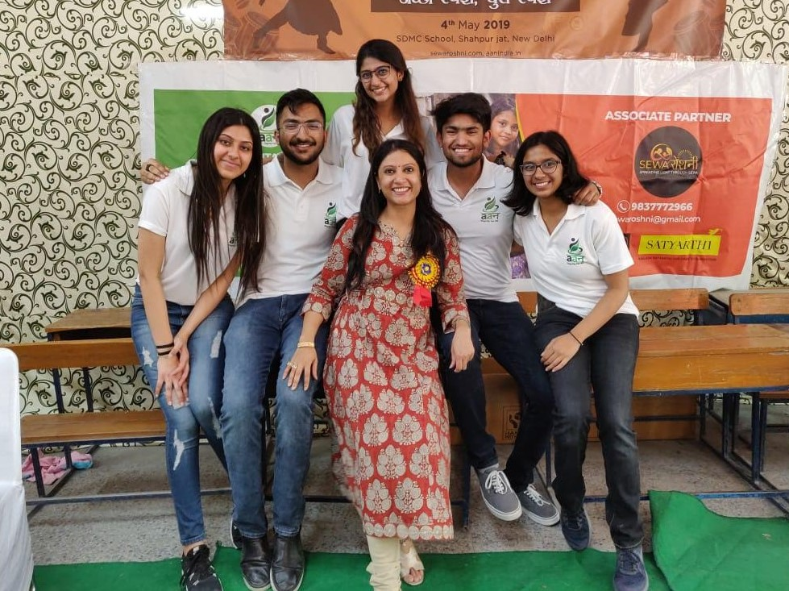

In 11th grade, society made a decision for me - I was going to be an engineer or a doctor. These are the only two respected professions in India and most women are pushed to be doctors. Having no interest in biology, I chose Physics, Chemistry, Maths and Economics as my high school subjects. I continued working hard in my classes and even went to a summer program for applied sciences to Yale-NUS, but my interest was piquing in developmental economics and social entrepreneurship. The summer program was my first glance at a world where I knew I could follow my passion and succeed. I joined my school’s social service club and proceeded to make many connections in the non-profit sector. As I interacted with marginalized communities, I realised the key to solving challenges faced by them was not just one thing, but a combination of empathy, perseverance and economics.
I wanted to start my own non-profit but it seemed nearly impossible due to restrictions of a boarding school, and societal barriers. No one thought I could actually pull it off. I put forward my idea of using economics as a tool to bring social change to my Vice Principal, Mrs Tuli. She was also my Economics Professor and one of my biggest supporters on my journey of establishing my own non-profit. I became the first female boarding school student to get permission to step out of school premises without a guardian, and keep my electronic devices to communicate and facilitate operations of my NGO. After months of persistence and planning, I established Aan - which means dignity in Hindi.
Aan is a non-profit based on the idea ‘a small gesture we make, makes a big difference in the world’. Today we are working on three big projects with the provincial government of my state, Uttarakhand - Awareness about Child Sexual Abuse and Prevention methods, Women empowerment and employment training, and lastly, a project I hold close to my heart - the beginning of it all - Project Srijan which translates to ‘creation’. Under Srijan, I worked with a community of pit loom weavers to identify issues they were facing as a community. They were barely making enough to make ends meet, with no electricity or gas. Helping them expand to metropolitan markets and inject their products (i.e. rugs made out recycled clothes), into the right supply chains increased their incomes by 300%. Srijan’s success made me realise that this is what I wanted to pursue. I wanted to make a difference. And being a girl was not going to stop me.
There exist many stereotypes which discourage women to go into the field of economics, from ‘women are bad at math’, ‘women don’t know how to deal with money’, to ‘this is a man’s job’. There exist structural barriers in society that are stopping women from gaining experience in these fields. Today, these barriers are finally beginning to be broken down. From chief economists at IMF like Gita Gopinath to Nobel Prize winners like Esther Duflo, women around the world are an essential part of the world economy, research and development and business today. We have seen with credible research that companies with female CEOs and CFOs may even perform better than their male counterparts. Our voices are being heard because we are doing a good job.
October of 2017, soon after applications for universities opened, I made a decision and told my parents that I wanted to apply to schools abroad to pursue a degree in economics. At first, they were hesitant as my parents never saw females participating in economic professions, and what concerned them even more was that compared to even engineering, economics has a larger scarcity of women working in the field . They agreed on the condition that if I got into a good school with a scholarship, they would let me go. If not, I would have to stay and continue engineering in India. As you can imagine, since I am writing this blog as a student pursuing Bachelors of International Economics at the University of British Columbia, I did fulfil my end of the deal with my parents.
As cliché as it sounds, I was honest to my work and I followed my heart. I let my application reflect who I am and who I want to be; a changemaker. I did not know what I was going to do in university back in 11th grade and I still made it here. So if you’re unsure about what you want to do, it is okay. And if you do know what you want to do, but your gender is making you question if you belong there, then my friend, keep following your passion, because you will come out victorious. The greater obstacles that exist, stopping us from pursuing and thriving in many fields is our acceptance of the lines drawn by society. I believe strongly that our generation needs to challenge society, re-draw lines, dismantle stereotypes, and propagate change. I created an opportunity for myself, and yes it was tough, and if you’re reading this, I’m sure it is tough for you as well. But I have one piece of advice for you, no matter how daunting it seems, no matter how many people tell you that you don’t have the ability to accomplish something, don’t give up. Take care of yourself, pause if you need to, but don’t give up on your dream. Because the end goal is totally worth it. If you have any questions, don’t hesitate to reach out to me at anushka.gupta@inclineedu.org
We empower students to become the best version of themselves
Diverse panels of successful post-secondary students to address any and every concern.
One on one mentorship with a hand-picked upper year for approachable and reliable guidance.
Skyrocket your career early by getting exposure and advice with us.
Our team consists of a diverse range of high-acheiving students from the Arts to the Sciences.